Digital programmierbarer Signalgenerator¶
Kurze Theorie und Motivation¶
Im Experiment 14 soll mit Hilfe des DAC7821 ein digital kontrollierbarer Oszillator aufgebaut werden. Die folgende Abbildung zeigt den Schaltplan aus der Anleitung:
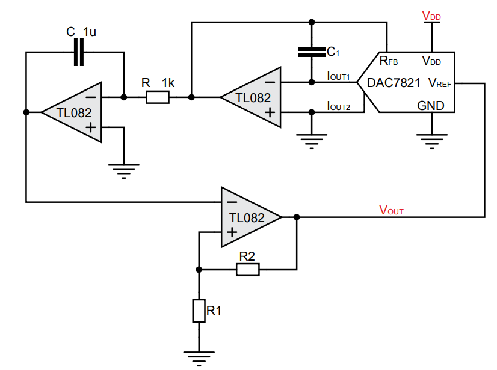{##14_fig_Manual_1 .align-center}
Hinter dem OP-AMP, der als Integrator dient, kann eine Dreiecksspannung abgegriffen werden. \(V_\text{Out}\) ist die resultierende Rechtecksspannung und zeitgleich der \(V_\text{ref}\)-Input für den DAC. Der Kondensator C1 bewirkt eine Schaltungsstabilität und soll laut Datenblatt des DAC7821 zwischen 1pF und 5pF liegen.
Bei dem DAC7821 handelt es sich um einen single Channel, Strom-Output, 12-Bit Digital-to-Analog Converter. Dieser kann auch als ein R-2R Netzwerk betrachtet werden, wie die folgende Abbildung zeigt.
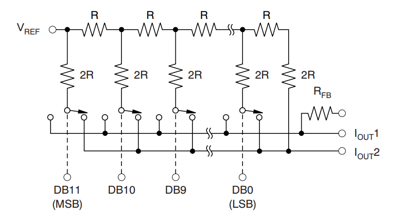{##14_fig_R2R .align-center}
Das Netzwerk besteht aus einer Parallelschaltung von Spannungsteilern. An jedem Knotenpunkt fällt die Hälfte der Spannung des vorherigen Punkts ab. Somit wären die Spannungen
Stromtechnisch ergibt sich somit für die beiden Stromausgänge \(I_{Out1}\) und \(I_{Out2}\) der Summenstrom aus den einzelnen Leitern. Für den Strom gilt
Dabei ist \(R_\text{ges} = 10\,k\Omega\) und \(2^n_\text{Bits} = 4096\), was der maximalen Bitfolge entspricht. Da Vref eine resultierende Rechteckspannung ist, folgt für die Stromausgänge auch eine Rechtecksform.
Spezifikation¶
Der digital kontrollierbare Oszillator soll so designt werden, dass die Rechteckspannung und die Dreiecksspannung eine maximale Frequenz von 400 Hz erreichen können. Die Frequenz der Schwingungen ist durch die folgende Gleichung gegeben:
Die Größen von R und C sind in Abbildung 14.1 verzeichnet mit R = 1\(\,k\Omega\) und C = 1\(\,\mu\)F. Damit ergibt für den ersten Bruch ein Wert von 250\(\,\)Hz. Der digital programmierbare Oszillator soll so ausgelegt werden, dass die maximale Frequenz der Schwingungen 400\(\,\)Hz beträgt. Damit ist f = 400\(\,\)Hz. Die maximale Frequenz wird erreicht, wenn die Eingangsfolge 111111111111 besteht. Umgerechnet in eine Dezimalzahl ist diese Folge 4096, womit sich bei der maximalen Frequenz der hintere Bruch wegkürzt und der Rest der Gleichung wie folgt aussieht:
Stellt man diese Gleichung nach dem Verhältnis von \(R_1\) und \(R_2\) um, so kommt man auf dieses Verhältnis:
Legt man \(R_2\) auf \(1000\,\Omega\) fest, dann muss \(R_1\) mit \(600\,\Omega\) gewählt werden. Mit diesen Werten wurde demzufolge auch die Simulation in TINA und in LTSpice durchgeführt.
Der Kondensator für die Schaltungsstabilität wurde hier mit 1pF festgelegt.
Simulation mit LTSpice
Die Simulation wurde sowohl mit LTSpice als auch mit TINA durchgeführt. Da kein Spice-Modell für den DAC7821 existiert und das Ausweich-Modell MV95308 nur in TINA existiert, wurde das Modell eines idealen 12-Bit DAC von CMOSedu verwendet. Zusätzlich wurde das fehlende Modell des OP-AMP TL082 integriert. Der Simulationsaufbau in LTSpice sieht wie folgt aus:
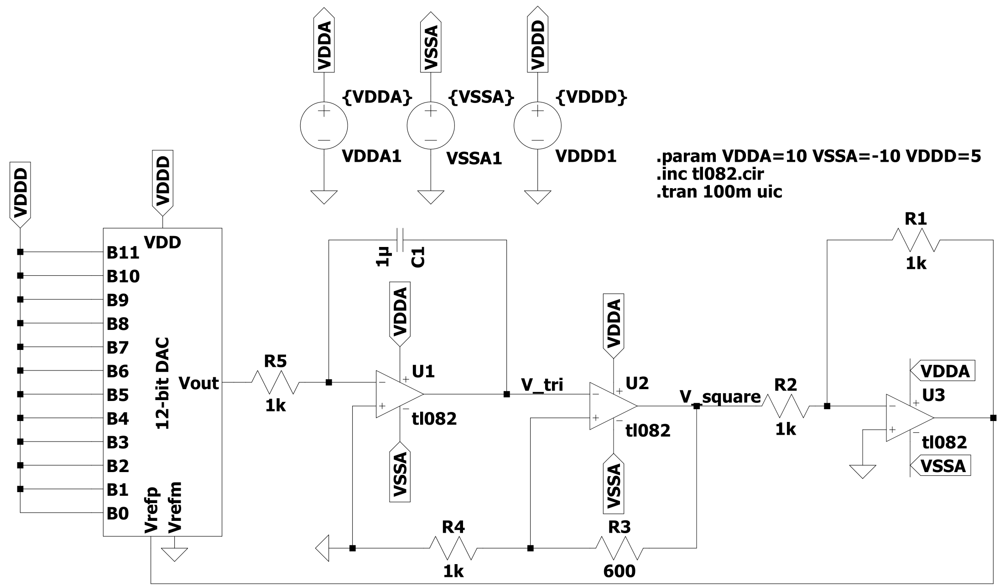{##14_fig_Spice_1 .align-center}
B11 steht hierbei für das MSB, B0 steht für das LSB. Für die vier verschiedenen Bitfolgen (100000000000, 010000000000, 001000000000, 000100000000) werden die entsprechenden Eingänge des Bits mit VDDD (5V) versorgt. Die restlichen Bits werden alle mit GND verbunden.
Für die Simulation wurden die Verläufe der Rechtecks- und der Dreiecksspannung dargestellt:
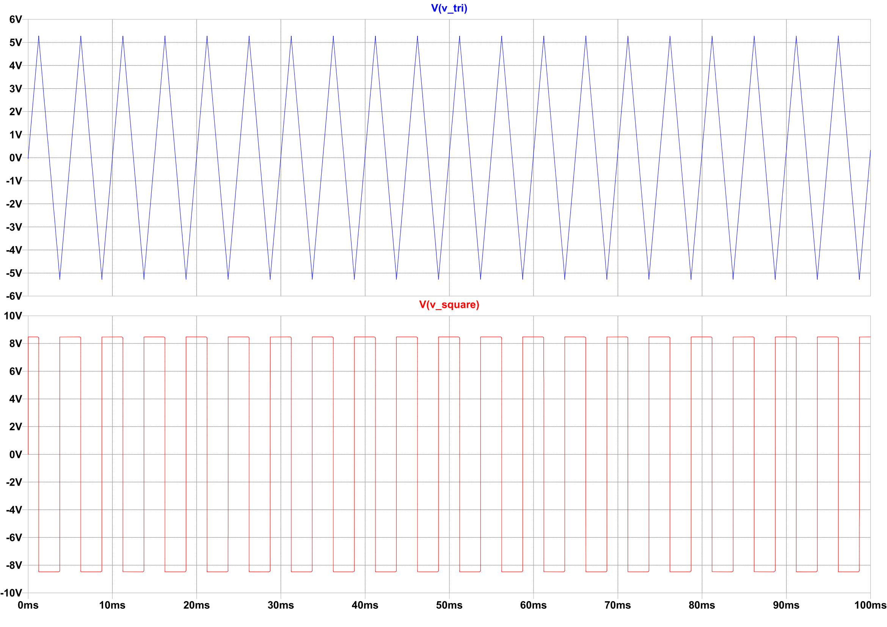{##14_fig_Spice_Sim_1 .align-center}
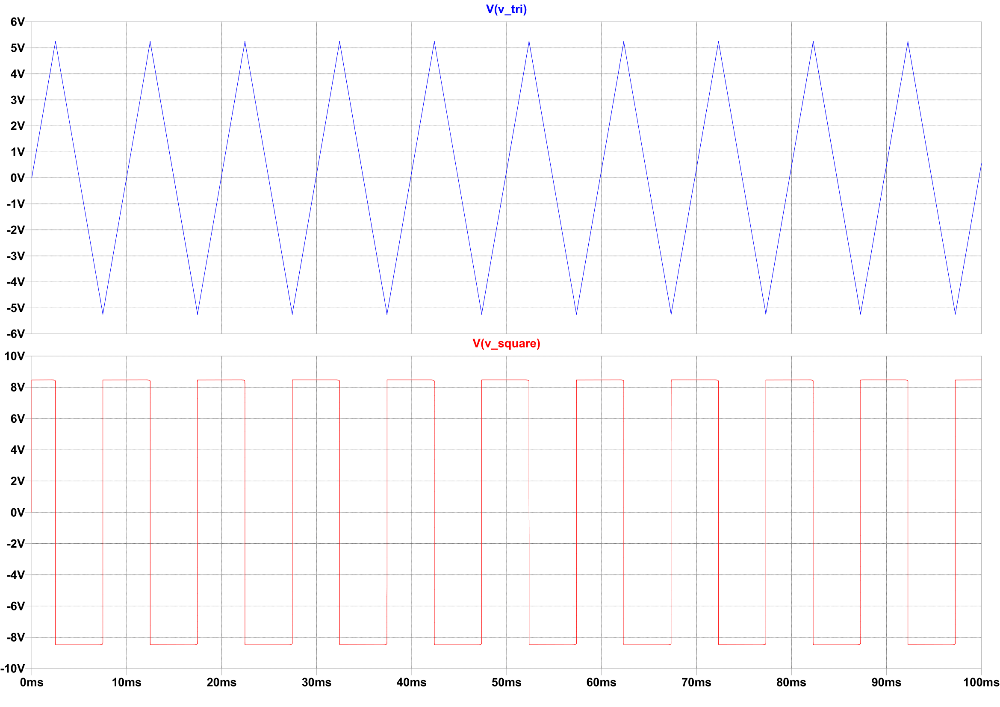{##14_fig_Spice_Sim_2 .align-center}
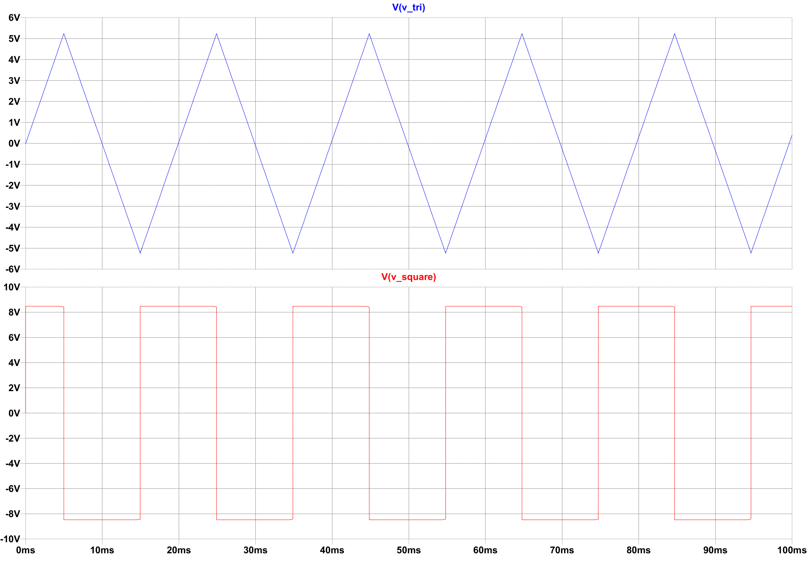{##14_fig_Spice_Sim_3 .align-center}
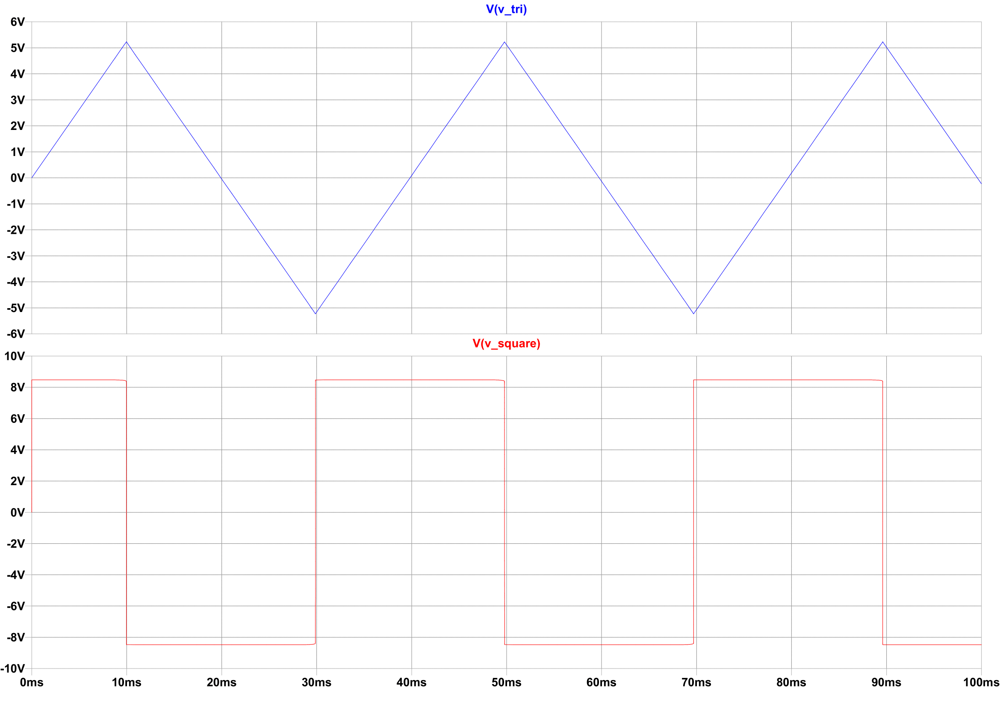{##14_fig_Spice_Sim_4 .align-center}
Simulation mit TINA
Die Simulation wurde zudem noch in TINA realisiert, da hier das in der Anleitung erwähnte Modell für den DAC MV95308 existiert. Das nachfolgende Bild zeigt die Schaltung:
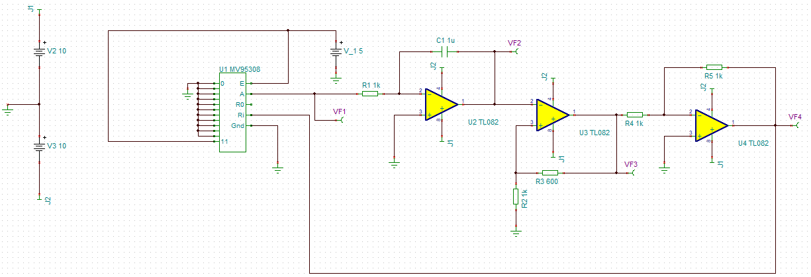{##14_fig_TINA_Schlt .align-center}
Vergleicht man den Schaltungsaufbau mit dem im Spice, dann erkennt man, dass der ideale 12-bit DAC durch das Modell MV95308 ersetzt wurde. Die restliche Schaltung ist mit der in SPICE identisch. Das Ziel der Simulation in TINA war es, zu ermitteln, ob ein Unterschied durch die zwei verschiedenen Modelle im Simulationsaufbau existiert. Wenn dies der Fall ist, ist außerdem die Frage, wie groß der Unterschied ist. An VF1 bis VF4 wurden die Spannungswerte der Simulation entnommen. VF2 entspricht dabei dem Punkt \(V_\text{tri}\) in Spice und VF3 dem Punkt \(V_\text{square}\). VF1 und VF4 wurden verwendet, um die Ausgangsspannung vom DAC beziehungsweise den Spannungswert Vref darzustellen.
Die Simulationsergebnisse für die vier verschiedenen Bitfolgen werden in den nächsten vier Abbildungen dargestellt. Zu beachten ist es, dass die Zeit-Skalen nicht in allen Abbildungen identisch sind.
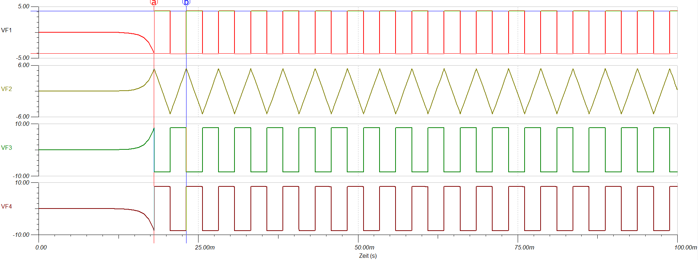{##14_fig_TINA_Sim_1 .align-center}
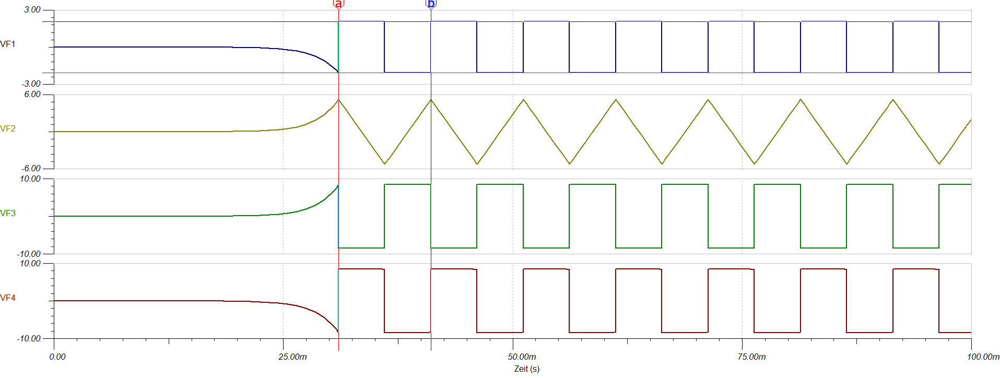{##14_fig_TINA_Sim_2 .align-center}
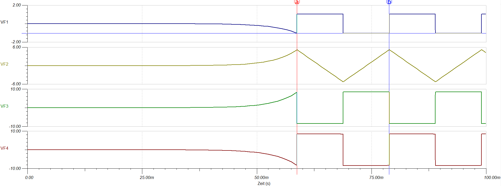{##14_fig_TINA_Sim_3 .align-center}
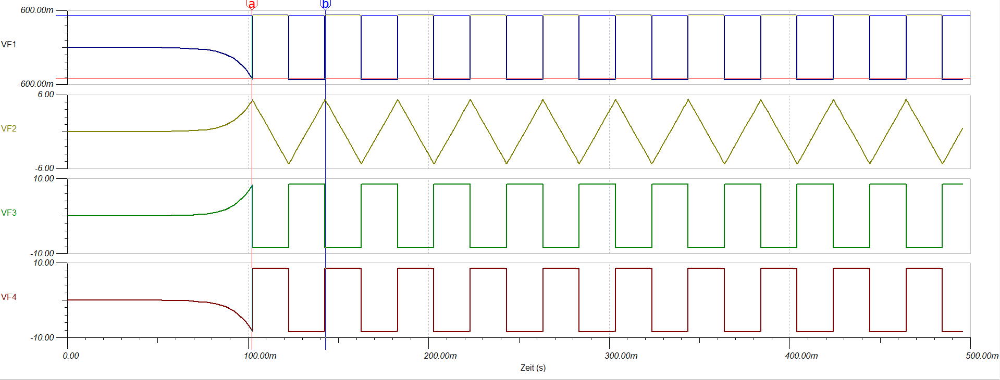{##14_fig_TINA_Sim_4 .align-center}
Messungen¶
Für die vier Messungen sollten die Frequenzen und Periodendauern ermittelt werden. Die nachstehende Tabelle stellt diese Werte mit den zugehörigen Werten der zwei Simulationen für einen direkten Vergleich dar.
LTSpice
Bitfolge Berechnete Peak - Peak Simulierte Simulierte Frequenz Output DAC Perioden-dauer Frequenz
1000 0000 200 Hz 8.416 V 4.996 ms 200.160 Hz 0000
0100 0000 100 Hz 4.206 V 9.98 ms 100.200 Hz 0000
0010 0000 50 Hz 2.102 V 19.92 ms 50.200 Hz 0000
0001 0000 25 Hz 1.051 V 39.82 ms 25.113 Hz 0000¶
TINA TI
Bitfolge Berechnete Peak - Peak Simulierte Simulierte Frequenz Output DAC Perioden-dauer Frequenz
1000 0000 200 Hz 8.320 V 5.08 ms 196.98 Hz 0000
0100 0000 100 Hz 4.160 V 10.08 ms 99.23 Hz 0000
0010 0000 50 Hz 2.080 V 20.08 ms 49.8 Hz 0000
0001 0000 25 Hz 1.040 V 40.75 ms 24.54 Hz 0000¶
Messung mit RedPitaya
Bitfolge Berechnete Gemessene Gemessene Frequenz Perioden-dauer Frequenz
1000 0000 200 Hz 5.18 ms 193.23 Hz 0000
0100 0000 100 Hz 10.22 ms 97.81 Hz 0000
0010 0000 50 Hz 20.67 ms 48.38 Hz 0000
0001 0000 25 Hz 41.37 ms 24.17 Hz 0000¶
An den Werten kann man erkennen, dass bei den Messungen mit einer steigenden Bitfolge und dementsprechend steigender Frequenz der Unterschied zwischen gemessenen und simulierten bzw. berechneten Frequenzen steigt.
Zusätzlich zu den Werten in der Tabelle wurden die von RedPitaya erzeugten Ozsillatorbilder als .csv-Dateien gespeichert und mit den simulierten Werten aus Spice dargestellt. Da die Simulationen von TINA und Spice nahezu identische Ergebnisse aufweisen, wird nur mit den LTSpice-Ergebnissen verglichen. Die aufgenommenen Verläufe werden nachfolgend zum visuellen Vergleich dargestellt:
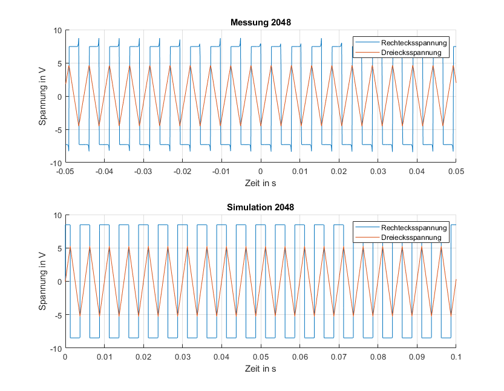{##14_fig_Spice_Auswrt_1 .align-center}
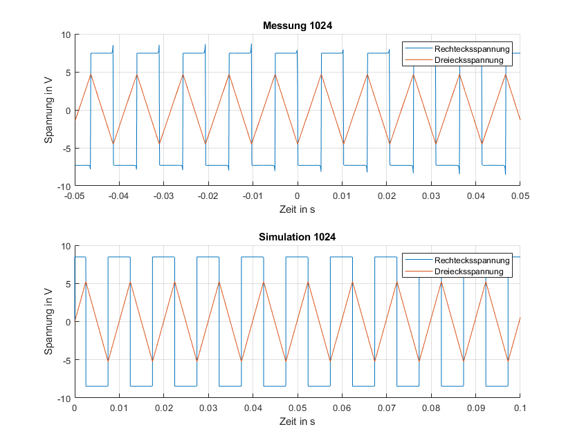{##14_fig_Spice_Auswrt_2 .align-center}
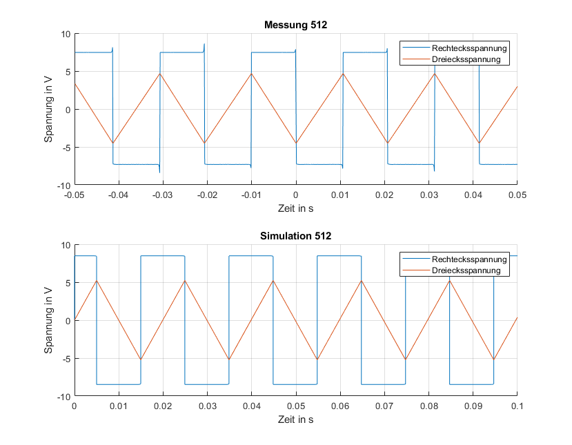{##14_fig_Spice_Auswrt_3 .align-center}
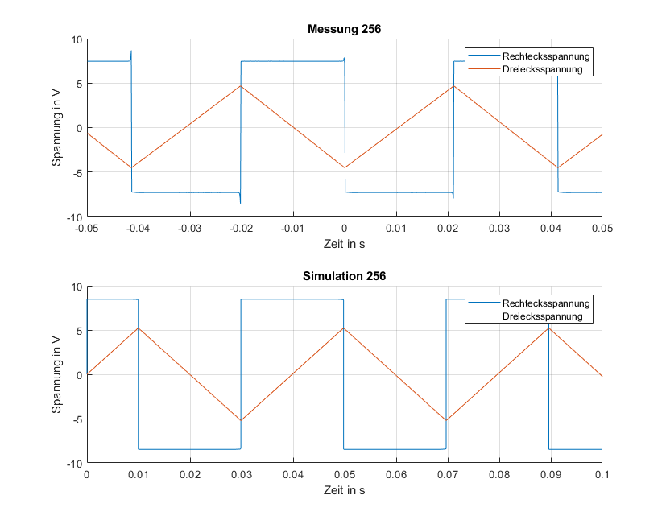{##14_fig_Spice_Auswrt_4 .align-center}
Man kann erkennen, dass die Frequenzen der Simulation und der Messung sehr ähnlich sind. Allerdings weisen die gemessenen Verläufe der Rechtecksspannung Peaks auf. Außerdem ist erkennbar, dass die Peak-to-Peak Werte der Ausgangsspannungen in der Simulation ein wenig höher sind als in der tatsächlichen Messung. Das liegt vor allem an der Annahme von idealen Bauteilen bei der Simulation, die Verluste der Bauteile werden nicht mitsimuliert.
Die analoge Bitfolge sollte zudem als vorzeichenlose Dezimalzahl gegen die resultierende Frequenz aufgetragen werden. Der folgende Graph zeigt diesem Zusammenhang für beide Simulationen und die tatsächliche Messung.
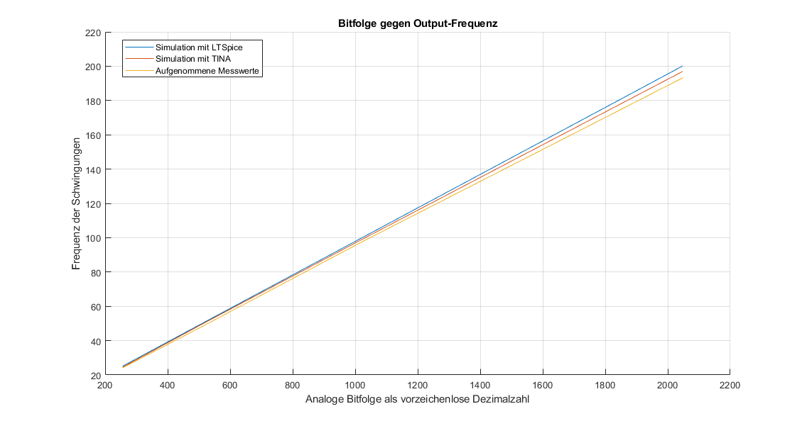{##14_fig_Matlab_Graph .align-center}